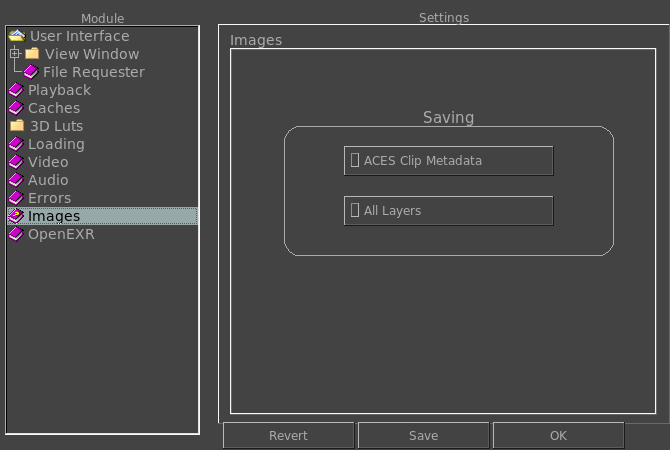

|  |
Toggling this option on will have the ACES Clip Metadata button always on when saving an image. The ACES Clip Metadata is a separate file that contains information about the LUT of the image (The Input Device Transform, the Look Mod Transforms, the Rendering Transform, and the Output Device Transform). Toggling this option on will have the All Layers option selected by default. The All Layers saves all layers of files with multiple channels or layers, such as OpenEXR, PSD, etc. |